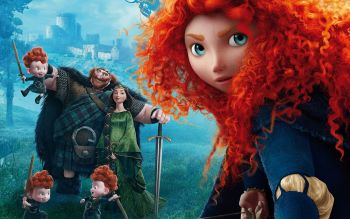

Великие цитаты из легендарных мультов
|
— Хитрый кролик.
— Глупый лис. — Да брось, ты же любишь меня. — Неужели? Да я и не скрываю! "Больше никто и никогда не увидит мои слабости..." "Учись прятать от всех свою обиду." "Миром правят стереотипы..." "Ну, тише, разобьёшься." "Не важно, как сильно ты о чем-то мечтаешь, важно, что ты для этого делаешь." |
|
"Пока полиция не видит, всё законно!"
"Я не понимаю, как люди так просто говорят грубые вещи. Кто-то мог годы потратить на то, чтобы научиться любить себя, а ты говоришь что-то и возвращаешь их к самому началу всего парой слов." "Ты боишься взрослеть. И не надо стыдится, мне тоже страшно. Да, порой реальность бывает суровой, не буду лгать. Но лучше пройти испытания, а не прятаться от них." |
|
"Чем больше сила, тем больше ответсвенность".
"У каждого есть часть себя, которую они скрывают. Даже от людей, которых они любят больше всего". "Я думаю, легко смеяться перед лицом опасности, когда ты ничего не воспринимаешь слишком серьезно". "Я тебе так скажу: не надо быть мной. Ищи свой путь." |

|
"Любовь — это когда чьи-то интересы ставишь выше своих."
Отпусти и забудь, "Я был неправ. Кристофф не настолько тебя любит, чтобы оставить." |
|
"Случайности не случайны"
"Выбрав дорогу, чтобы уйти от судьбы, мы именно там её и встречаем." "Чтобы сделать что-то особенное, надо просто поверить, что это что-то особенное." |
|
"Да, прошлое может причинять боль. Можно или убегать от него, или научиться чему-то."
"Нужно прошлое оставлять сзади. Смотри: плохие вещи происходят постоянно, и тут уже ничего не сделать, правда ведь? |
|
"Можно заехать неизвестно куда… лишь бы знать, откуда."
"Надо не мчаться в погоне за временем, а просто приятно его проводить." " Один мой хороший друг так сказал про кубок — бесполезная жестянка." "Если подъехать к делу с умом, можно многого добиться." |

|
"Но помни, загадать желание — это только часть дела. Надо ещё много работать. И тогда сбудется всё, что пожелаешь."
"Ты знаешь, что такое хорошая еда? Это объединяет людей из всех слоев общества." |
|
"Если не знаешь, что сказать, то лучше промолчи."
" — Зима очень долгая, правда? |
|
"Вся история нашего мира доказывает, что за деньги можно купить все, но ни за какие деньги нельзя заставить собаку вилять хвостом."
|
|
"Он выглядит вполне обычно, но не впадай в заблуждение: как часто бывает, содержание куда интереснее наружности."
"В случае непредвиденных ситуаций запасные выходы здесь, здесь, здесь, здесь, где угодно!" "Не всё бывает так, как кажется на первый взгляд." "Тебе нужно быть самим собой." Друг? - Это сильно сказано... |
|  |
"Некоторые говорят, что судьба от нас не зависит, что мы над ней не властны, но я знаю точно: наша судьба живет внутри нас. И нужна только храбрость, чтобы ее разглядеть…"
"Если выпал шанс изменить судьбу — подумай." |

|
"Ты не должен никому позволять загонять себя в рамки. Единственные твои рамки – твоя душа."
"Если ты все время будешь оглядываться назад, то не сможешь увидеть, что лежит впереди..." "Готовить может каждый." "Не каждый может стать великим художником, но великий художник может прийти откуда угодно." "Природа изменчива, пап. Мы можем на неё повлиять! Главное — захотеть!" |